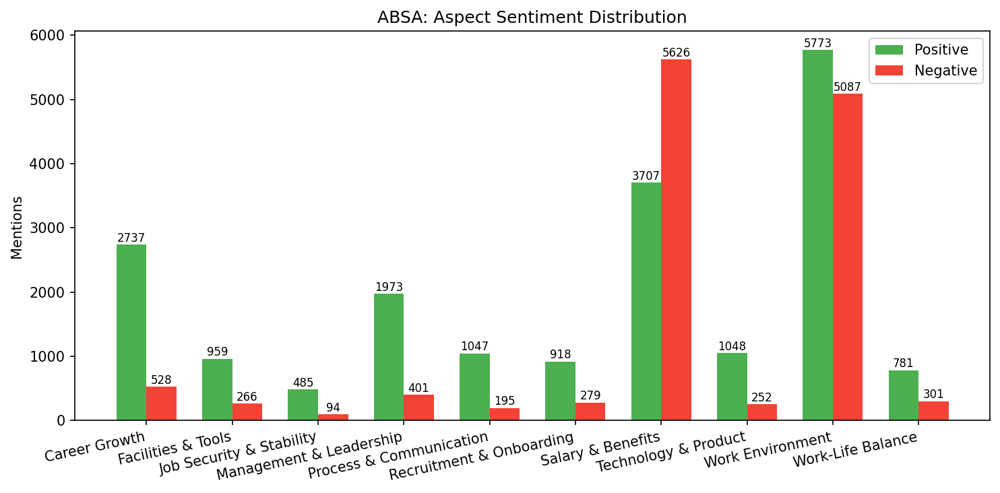

ABSA · 5 workplace aspects · Key findings · HR implications
Rule-based keyword matching + lexicon opinion extraction ·
src/analysis/absa.py
pros → positive,
cons → negative)

Dominated by: overtime, áp lực, quá tải, stress, deadline. Employees are burning out.
Limited promotion tracks, insufficient training budget. Strongest pain point by volume.
Both the most praised (1,568) and most complained about (1,810). Culture is polarizing — varies by team.
Keywords: thiếu tầm nhìn, không công bằng, micro-manage. Leadership quality inconsistent.
Compensation is competitive but inconsistently applied. Mixed signal — benchmarking recommended.